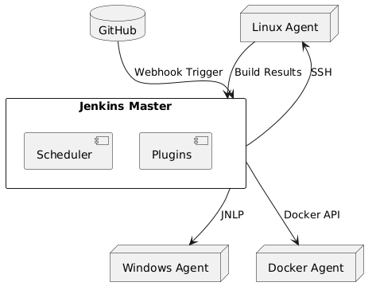

The Jenkins Master-Agent Architecture (also called Master-Node or Controller-Agent) is designed to distribute workloads across multiple machines, enabling scalable and efficient CI/CD pipelines. Here's a detailed breakdown:
Jenkins Master (Controller)
The central control unit that manages the entire Jenkins ecosystem.
Responsibilities:
Schedules jobs (builds, tests, deployments).
Stores configuration and job metadata.
Manages user interface (dashboard).
Coordinates communication with agents.
Hosts plugins and global tool configurations.
Does NOT execute jobs directly (by default) to avoid performance bottlenecks.
Agents (Nodes)
Worker machines that execute jobs assigned by the master.
Responsibilities:
Run build tasks (e.g., compiling code, running tests).
Isolate workloads to avoid resource contention.
Provide environment-specific capabilities (e.g., OS, tools).
Agents can be physical machines, VMs, containers (Docker), or cloud instances.
Job Distribution
The master assigns jobs to agents based on:
Labels: Match agent capabilities (e.g., "linux", "docker").
Availability: Agents with free executor slots.
Example: A job requiring Node.js v18 runs only on agents labeled with that version.
Communication
Master → Agent:
Commands, job configurations, and artifacts are sent to the agent.
Agent → Master:
Build status, logs, and results are reported back.
Connection Types:
SSH: Secure shell (common for Linux agents).
JNLP (Java Web Start): Agent connects to the master via TCP (useful for dynamic/cloud agents).
Docker/Kubernetes: Ephemeral agents spun up on demand.
Agent Setup
Agents must have:
Java Runtime Environment (JRE).
Network access to the master.
Tools required for jobs (e.g., Git, Maven, Docker).
Scalability
Distribute workloads across multiple agents to handle parallel jobs.
Resource Isolation
Prevent resource-heavy builds from affecting the master’s stability.
Environment Flexibility
Run jobs in different OS/software environments (e.g., Windows build agents, Linux test agents).
Security
Isolate sensitive builds (e.g., production deployments) to dedicated agents.
Fault Tolerance
If an agent fails, the master can reroute jobs to other agents.
Multi-Platform Testing
Use a Windows agent for .NET builds and a Linux agent for Python tests.
Ephemeral Agents
Spin up Docker/Kubernetes agents dynamically for short-lived tasks.
Load Balancing
Distribute 100+ daily builds across 10 agents to reduce queue time.
Add an Agent
Go to Manage Jenkins → Nodes → New Node.
Specify agent details (name, labels, remote root directory).
Launch Method
Choose Launch agents via SSH (for Linux) or Launch agent via Java Web Start (JNLP).
Agent Configuration
Install required tools (e.g., Git, JDK) on the agent machine.
Assign labels like docker or prod-deploy for job targeting.
Keep the Master Lightweight: Avoid running jobs on the master.
Use Labels: Organize agents by purpose (e.g., frontend, backend).
Monitor Agents: Use plugins like Monitoring or Prometheus to track CPU/memory usage.
Secure Agents: Restrict agent access to trusted users and networks.
Agent Offline?
Check network connectivity, SSH/JNLP ports, or agent machine health.
Build Failures on Agents?
Verify tool installations and workspace permissions on the agent.
High Load?
Add more agents or optimize job parallelism.